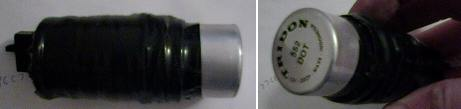
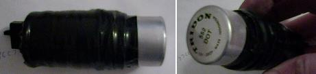

Turn Signal Flasher
Most universal automobile turn signal relays can be used in place of the OEM one. You may have to change/add the appropriate connectors.
V65
85-86 V65 Magna / 84-85 V65 Sabre
1. http://webpages.charter.net/bpeloquin/V65_flasher.html


2. Tridon/Stant EP35
- Green Wire to "-"
- Green/White Wire to "+"
- Gray Wire to "L"
83-84 V65 Magna
1. All two prong 552/536 flashers should work ('bout $2.50)
2. (Diode not included in picture of home-made flasher)
 

Additional Info:
- 83-84 V65 Magna cancel should work with 2 prong flasher
- 85-86 V65 Magna cancel won't work with 2 prong flasher
- 84-85 V65 Sabre cancel won't work with 2 prong flasher
V45
All two prong 552/536 flashers should work ('bout $2.50)
LEDs
If you switch to LED turn signals, you don't have to buy a "load equalizer". Just replace the original thermal turn signal relay with a universal "electronic" one found at most automobile parts stores (about $8). The only issue is that you lose the "fast-signal" that notifies you if one of your turn signals is not working. But it shouldn't matter as you do a "walk-around" check on the bike before every ride - right?